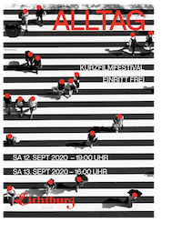
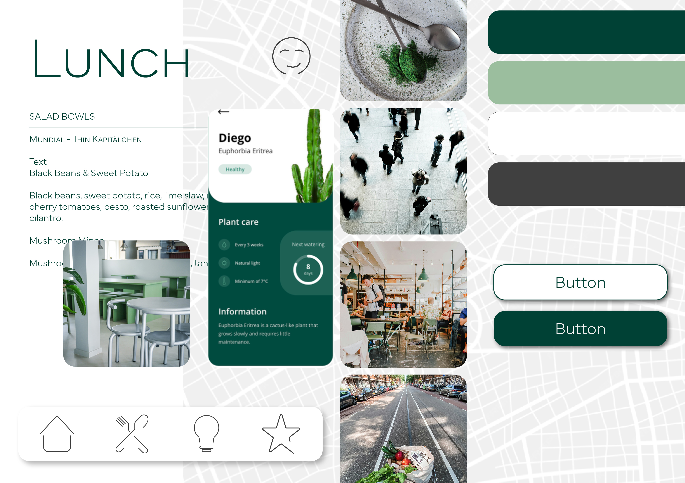
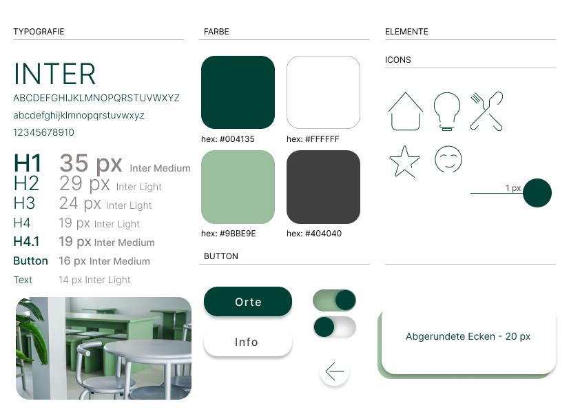

Konzept und Design für einen neuen Unverpacktladen namens "nada." in Essen, der auf
nachhaltiges
Einkaufen ohne Verpackungsmüll abzielt.
Das Projekt „nada.“ ist die Vision eines nachhaltigen, unverpackten Einkaufskonzepts von
Frida
und Tom Steiner in Essen-Holsterhausen. Ziel ist es, eine umweltfreundliche
Einkaufsalternative
zu schaffen, bei der Kunden mit eigenen Behältern genau die Menge an Lebensmitteln kaufen,
die
sie benötigen – ohne Verpackungsmüll.
Schritte zur Umsetzung:
Vision und Idee:
Ein Zero-Waste-Geschäft für biologische, regionale und saisonale Produkte.
Förderung eines nachhaltigen Einkaufsverhaltens und Reduktion von Lebensmittelverschwendung.
Marktanalyse und Wettbewerb:
Analyse der Konkurrenz, insbesondere des bestehenden „Glücklich Unverpackt“-Ladens in Essen.
Abgrenzung durch eigenes Branding und Konzept.
Gestaltungskonzept:
Entwicklung eines klaren, modernen Designs mit dem Namen „nada.“
Einprägsames Logo und visuelle Identität mit minimalistischer Typografie (Barlow-Schrift).
Farbschema und Gestaltung orientieren sich an natürlichen, unverpackten Lebensmitteln.
Geschäftsausstattung und Marketing:
Logo-Design in Farb- und Schwarz-Weiß-Varianten.
Nachhaltige Geschäftsmaterialien wie Visitenkarten aus Samenpapier, recycelte Briefbögen und
umweltfreundliche Stifte.
Kommunikationsmittel: Website, Social Media, Flyer und Plakate.
Kennzeichnungssystem für Produkte mit nachhaltigen Aufklebern.
Zusätzliche Initiativen:
Integration eines Foodsharing-Bereichs, in dem Kunden überschüssige Lebensmittel teilen
können.
Kooperation mit bestehenden Unverpackt-Läden zur Stärkung des Konzepts.
Markenschutz:
Schutz des Logos und der Marke durch Eintragung beim Patent- und Markenamt.
in Konzept zur Neupositionierung und Markenentwicklung des Optikergeschäfts Optik Tack in
Aalen,
einschließlich Situationsanalysen, Zielgruppenanalysen und Corporate Design.
ZUSAMMENFASSUNG DES PROJEKTS
Das Projekt MG - 01 Optik Tack, zielt darauf ab, das mittelständische Optikergeschäft Optik
Tack
in Aalen neu zu positionieren und gegenüber großen Ketten und lokalen Konkurrenten
wettbewerbsfähig zu machen. Der Fokus liegt auf einem neuen visuellen Konzept, das die Marke
stärkt und eine klare Markenidentität schafft.
Wichtige Punkte:
Einleitung/Rebriefing: Optik Tack soll durch fachgerechte Beratung und handwerkliches
Geschick überzeugen. Ein neues visuelles Konzept und ein Redesign des Logos sind
geplant.
Situationsanalyse: Umfasst Unternehmens-, Branchen-, Umfeld- und Konkurrenzanalyse sowie
Stärken/Schwächen und Risiken/Chancen.
Positionierung: Nachhaltigkeit steht im Mittelpunkt. Optik Tack bietet Brillen aus
nachhaltigen Materialien und setzt auf umweltfreundliche Produktion.
Zielgruppenanalyse: Zielgruppen sind umweltbewusste Konsumenten, die Wert auf
Nachhaltigkeit
und Stil legen.
Corporate Design: Neues Logo inspiriert von der Bauhaus-Bewegung, Verwendung der
Schriftart
Futura, und ein einheitliches Designkonzept für alle Kommunikationsmittel.
Anwendungen: Umfasst die Gestaltung der Homepage, Social Media, Flyer, Plakate und das
Ladenlokal, um die neue Markenidentität zu kommunizieren.
Das Ziel war es, Optik Tack als nachhaltige und stylische Marke zu etablieren, die sich
durch
Qualität und Umweltbewusstsein auszeichnet.
Das Projektumfasst die Entwicklung einer modernen Website für das italienische Restaurant
„Villa
Italia“ in Essen-Bredeney. Ziel ist es, die gehobene italienische Küche online ansprechend
zu
präsentieren und eine jüngere Zielgruppe anzusprechen.
Konzept und Zielsetzung:
Erstellung einer hochwertigen Website, die das elegante Flair des Restaurants
widerspiegelt.
Einbindung von Bildern der Speisen und Räumlichkeiten zur visuellen Unterstützung.
Implementierung einer Online-Reservierungsfunktion und Pop-up-Elemente für aktuelle
Angebote.
Zielgruppe und Nutzerfreundlichkeit:
Fokus auf junge, karriereorientierte Menschen (20-30 Jahre), die exklusive Küche
schätzen.
Gleichzeitig bleibt die Seite übersichtlich für die bisherige Zielgruppe (45-75 Jahre).
Einfache Navigation und klare Struktur für eine intuitive Nutzung.
Technische Umsetzung:
Optimierung für PC-Darstellung mit einer Auflösung von 1440px, später Erweiterung für
mobile
Endgeräte.
Kompatibilität mit allen gängigen Browsern (Chrome, Firefox, Safari, Edge).
Schulung der Restaurantbesitzerin für eigenständige Pflege der Inhalte über ein CMS.
Designkonzept:
Schriftwahl:
Kombination aus „Barlow“ (klar und modern) für Fließtexte und „Playfair Display“
(elegant)
für Überschriften.
Farbschema:
Grüntöne für Natürlichkeit und Exklusivität. Dunkles Grau für Eleganz und Harmonie.Rot
als
Akzentfarbe zur Hervorhebung wichtiger Elemente.
Bilder und Illustrationen:
Hochwertige Fotografien der Speisen und Innenräume, ergänzt durch dezente grafische
Elemente.
Animation:
Dezentes Highlighting für Menüleiste und Angebote, um Aufmerksamkeit zu lenken.
Informationsarchitektur und Navigation:
Klare Menüstruktur mit einfacher Navigation.
Interaktive Elemente (Modal Screens) für Reservierungen und Spezialmenüs.
Nutzerfreundliche Sitemap, um Informationen schnell zugänglich zu machen.
Mit diesem Konzept bietet die neue „Villa Italia“-Website eine ansprechende Mischung aus
Tradition und Moderne, spricht neue Gäste gezielt an und erleichtert die Interaktion mit dem
Restaurant.
Das Videoprojekt umfasst die Entwicklung umfasst die Erstellung eines Storyboards zum
ausgewählten
Thema Prokrastination. Erstellung von Videomaterial, Schnitt und Musikauswahl. Zusätzlich wurde
ein
Plakat für ein figtives Kurzfilmtage-Festival erstellt.
Konzept und Zielsetzung:
Themenauswahl in der Gruppe mit zwei Mitschülern. Herangehensweise geplant und Drehort sowie
Protagonist*innen ausgewählt. Ziel war es drei unterschiedliche Filme zum Thema
Prokrastination
zu erstellen. "Prokrastination ist die Tendenz von Menschen, zu erledigende Aufgaben ständig
aufzuschieben. Das Aufschieben von Tätigkeiten ist dabei ein Alltagsphänomen und den meisten
Menschen bekannt.
In der Kurzfilmreihe „Prokrastination“ soll es um verschiedene Typen gehen, und wie diese
mit
dem Thema umgehen.
Ein alltägliches Thema rückt hier in den Mittelpunkt. Jeder der Zuschauer wird sich in
einem
der drei Kurzfilme wiederfinden und sich in seiner eigenen Handlungsweise ertappt fühlen.
Nicht länger prokrastinieren! Film ab!
Plakat zur Videoreige

Projektarbeit: Webprojekt, Thema: Erlebnisurlaub
Konzeption einer Website für ein Erlebnishotel. Die Auswashl des Themas und des Standortes
konnten
eigenständig ausgewählt werden. Meine Idee war ein Kultur-Hotel in Weimar zu konzipieren. Es
sollte
junge Menschen ansprechen und minimalistisch gestaltet sein.
Konzept und Zielsetzung:
Die Aufgabe war es eine Website für ein Hotel zu entwickeln. Das Hotel sollte ein besonderes
Erlebnis für die Gäste erschaffen. Dabei habe ich mich für ein Kulturhotel in Weimar
entschoieden. Der Name Plot sollte aus dem Theater kommend symbolisch für den Kontext zur
Literatur, Kunst und Theater in Weimar stehen. Auf den Spren von Goethe und Schiller, aber
auch
die Bauhauskultur der Stadt sollte aufgegriffen werden. Die Zielgruppe ist eine junge,
kunst-
und kulturinteressierte Gruppe von Menschen, die Freude daran haben den Charme der Stadt zu
erleben und neu zu inszenieren und zu erfinden. Die Seite ist minimalistisch gestaltet und
bietet ansprechende Akzente.
Minimalistisch, Direkt und ein bisschen Punk.
Ein Ort für junge Literatur- und Kunstliebhaber. Inmitten von Weimar liegt das Hotel. Ein
experimentelles Kulturhotel.
Sprache kann viel mehr sein als ein bloßes Kommunikationsmittel. In unserem Alltag nutzen
wir
die Sprach bereits automatisiert. Wörter fließen, aber was geben wir ihnen für einen Wert?
Das
Hotel bietet vielseitige Angebote, um in die Welt der Literatur einzutauchen. Spezielle
Themenangebote zu Autoren und ihren Werken und unterschiedlichen Textformen wie Dramen
oder Poetik.
Projektarbeit: Mobile App, Thema: Lost in Transition
Konzeption einer App für Menschen, die an fremden Orten unterwegs sind.
Konzept und Zielsetzung:
Die Aufgabe war es eine mobile App zu entwickeln. Dabei ging es darum sich als Nutzender
besser
zurecht zu finden in fremden Ländern oder Städten. Dabei habe ich den Fokus auf das Essen
gesetzt.


CLEAN-EATING-LIFESTYLE AN JEDEM ORT
Die Clean-Eating-Lifestyle-App schafft es einen Clean-Eating-Lifestyle an jedem Ort
zu realisieren. Lokale gesunde Spezialitäten finden und die kulinarische Vielfalt des
Reiseziels erleben. Die Kombination aus Empfehlungen für lokale gesunde Spezialitäten
und einer interaktiven Karte mit Standorten von Restaurants, Cafes, Bio-Märkten,
Bauernmärkten und Lebensmittelgeschäften mit frischen, lokalen Produkten ermöglicht
es den Clean-Eating-Lifestyle auf Reisen zu integrieren.
Mit Ernährungsprofil-Feature können Ernährungspräferenzen und Allergien angeben
werden. Dadurch bekommt man personalisierte Empfehlungen, die perfekt auf die Bedürfnisse
zugeschnitten sind. Die App bietet darüber hinaus regionale Begriffe, Label
und Vokabeln in entsprechenden Sprachen, um zu helfen, gesunde Entscheidungen
zu treffen. Mit dem Einkaufs- und Verständnis-Tool können persönliche Listen erstellt
werden, um die Clean-Eating-Planung zu erleichtern. App unterstützt die Nutzenden
bei jedem Schritt auf Reisen